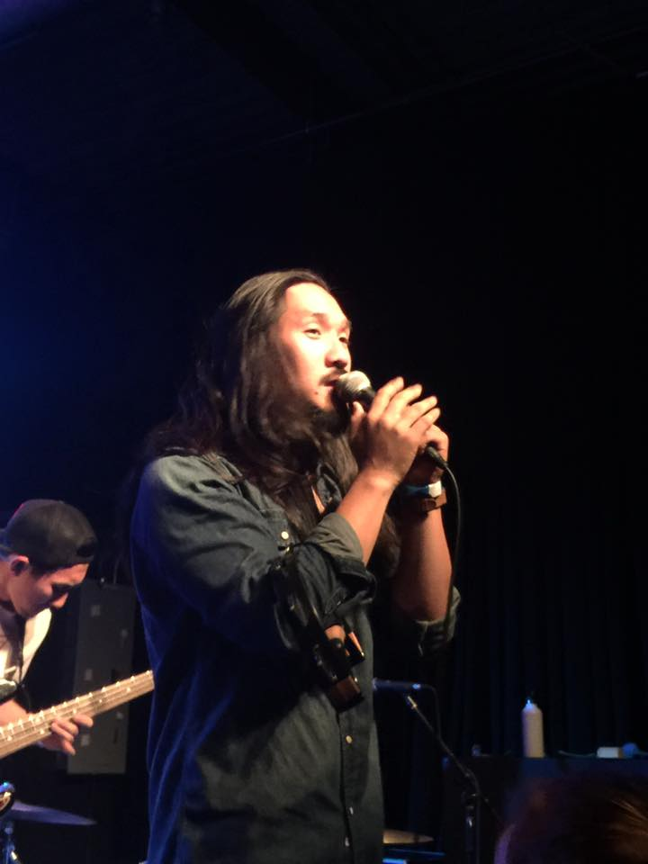

Deconstructing Destructive Stereotypes
What are the most prevalent stereotypes affecting Asian-Americans?
From being calling short and submissive, to being categorized as white, Asian-Americans are subject to many expectations, realistic or not. One prominent stereotype that has a firm hold on the Asian-American experience is the model minority myth.
Jennifer Ho, an English professor and “ethnic studies and critical race theory” specialist, said the model minority myth is the most prevalent stereotype in the Asian-American community.
The model minority myth, Ho said, frames Asian-Americans as “inherently smart, hardworking, robotic, good at math. Nerd robots.”
Sandy Zhang, a Chinese international graduate accounting student at the UNC Kenan-Flagler Business School, said he could see why this stereotype about smartness exists.
“I can imagine Asians are good at math, this kind of stereotype,” Zhang said. He said that 20 years ago, the only way to come to the U.S. from China or India would be to receive a scholarship, which meant only elite students could come to the U.S. to study. “So of course, they are super good at math, they are super good at everything.”
“People have the stereotype like Asians are very hardworking, Asians are very focused on quantitative stuff,” said Zhang. “That is because it is like that; people come here, they're f*cking smart.”
“When we first see a person and have no idea who they are,” said Pinyu Chen in a message, a junior studying exercise and sports science. “We generally make inferences…based on our preconceived notion[s]. It is only when we get to know someone that those preconceive[d] notions are either confirmed or disconfirmed.”
According to the
U.S. Census’ 2015 Educational Attainment report, Asian-Americans had a higher chance of having at least a bachelor’s degree over whites, and over 50 percent of Asian-Americans over age 25 held at least a bachelor’s degree.
Part of this is because many East Asian cultures emphasize education, said Brooke Fisher, a senior multimedia student in the School of Media and Journalism.
“That has become a widespread stereotype,” said Fisher. “Because a lot of East Asian cultures really place high value and emphasis on education. And there’s those stories about the Asian tiger moms who force their children, pretty much, to study all day, do a bunch of extracurriculars, like playing the violin, that kind of stuff, so there’s just like that cultural background of East Asians and most Asians in general…and it’s kind of turned into Asians are automatically smart at something.”
While there is an emphasis on education, Brooke said most people forget the level of work involved in doing well, the after-school tutoring and longer time spent overall on education.
According to
Data USA, Asian-Americans had the highest wages in North Carolina in 2016, making 1.23 times more at $75,097 per year than the second-highest-paid at $61,283, which were white workers.
However, while Asian-Americans make up the highest paid population, they make up the third highest poverty level, at 7.5 percent of the Chapel Hill population below the poverty line (whites and African-Americans make up 72.5 and 15.8 percent).
One of the issues with the model minority myth is that groups of many different backgrounds are classified under one title, that may not reflect this image of success and higher education.
“One of the things that surprised me,” said Fisher. “That I didn’t even really think about was the fact that a lot of people, when they think about Asian-Americans, they think ‘oh, they’re highly successful, there’s like no poverty because they’re all super smart, and they’re doctors and lawyers.’”
Fisher said this stereotype actually becomes harmful because there is a lot of economic disparity between East and Southeast Asian groups.
“Asians are not a monolith,” she said. “There’s like hundreds of different cultures… socioeconomic status is not the same throughout. So, I feel like that’s a really insidious one (stereotype).”
Asian-Americans make up almost 13% of the population of Chapel Hill. But who makes up that 13%?
Sourced from U.S. Census Factfinder
“It may seem like model minority isn’t a bad thing, like, people think you’re smart right, how can that be bad?” said Jason Yu, a junior studying computer science, statistics, cognitive science and Chinese at UNC-Chapel Hill.
Yu said there are two main reasons why the stereotype is negative.
“It affects people on an individual basis,” said Yu. “And it affects people on a collective basis through data. So, I’ll start with data: so, let’s look at, for example, how UNC distributes funding, they categorize Asians as Asians, there’s no breakdown, when they look at numbers, of who is Chinese, versus Japanese, versus Korean.”
“So, while there are statistics out there that say oh, the model minority myth is true, because if you look at the average Asian in the U.S., they are socioeconomically better than the average white person in the U.S.… they’re, on average, better educationally, better economically, better on all these test scores, that kind of thing.”
“The issue is then,” Yu said. “When you say average, what is happening is the large plurality of Chinese-Americans who have been in the U.S. for several generations longer than other immigrants, like from Southeast Asia, from West Asia…there’s a lot of subgroups within the large Asian label that are doing incredibly, incredibly worse, on average, compared to the average white American in the US.”
According to
Pew Research Center, this is accurate. “In 2015, some 15% of immigrants from South and East Asia lacked a high school diploma, compared with 9% of native-born Americans. Meanwhile, poverty rates were as high as 35% among Burmese, 33% among Bhutanese, and 28% among Hmong and Malaysians, compared with 15.1% in the U.S. overall.”
Due to this issue, Yu said, groups of people are not getting the help financially that they should qualify for, due to being grouped into a population that’s doing, on average, better overall.
According to
Pew, Asians in the U.S. have the highest level of income disparity among racial groups, meaning that the lowest and highest levels of income are the furthest apart. Asians in the bottom 10 percentile make 10.7 times less than the upper 90th percentile. Since 1970, the disparity has grown from being around the same level of inequality as whites and Hispanics to having the greatest income gap.
Pew also reports on the historical background of the inequality, such as the increase in refugees to the U.S. after the Vietnam War, the 1990 Immigration Act which encouraged more skilled workers to emigrate and the 90s tech boom bringing many trained professionals from India and elsewhere.
Candice Hsu, a senior at UNC, said she was surprised when her friends, applying to grad school, told her that in the application process, “Asians are not considered [a] minority anymore.” She said there used to be an advantage for applying, because schools wanted to boost diversity.
This is just another way the model minority myth has affected Asian-Americans. Ho said there are many ways it is destructive.
“It's doing a lot of things simultaneously,” said Ho. The first thing, is “to reduce Asian-Americans into some monolithic category.”
“So, what do you do with not-your-typical-Asian-Americans,” said Ho. “Asian-Americans that are not excelling in education, Asian-Americans who are artists and humanists and who are choosing not to buy into this myth?”

Run River North is a Korean-American band from California, a group choosing not to "buy into this myth."
Source: Run River North at a concert at Cat's Cradle in Carrboro, NC, photo by Sivonne Ward.
The second thing, Ho said, was that the myth “pits Asian-Americans as a desirable minority in U.S. culture against what would then be undesirable or lesser-achieving minorities.”
This becomes an issue for both Asian-Americans and other minorities.
“The idea,” Ho said. “that Asian-Americans are high-achieving and there are too many of us in higher education, and therefore, we are either taking up resources or we don't need resources, because we already know how to excel in education, is very damaging for Asian-American students who are really struggling, Asian-American students who are subject to institutional discrimination and racism and certainly very, very harmful to African-American, indigenous and Latinx students who are being told, 'why can't you be more like the Asians?'”
Alongside this myth is the issue of mental health and the destructiveness of a reinforced mindset instilled in a population.
According to
Mental Health America, 2.2 million people (over 13 percent of the Asian-American/Pacific Islander population) had diagnosable mental illnesses in 2014.
Yu brought up mental illness as well.
He said mental health is not really discussed in a lot of Asian communities, and in some instances, isn’t taken seriously as a real illness. With the level of competition not even to surpass “white counterparts” and the average but to surpass friends and family, there is a high level of stress put on the value of a grade or the SATs, resulting in high levels of mental illness.
Ho, originally from the west coast, has seen a difference in the stereotypes on this side of the country.
Ho said that in the South, Asian-Americans are considered to have “honorary white status,” with access to white privilege and are essentially excluded from the institutional racism applied to other minority groups.
Ho has some strategies for addressing this “illogic.”
“I believe in naming things for what they are,” said Ho. “So, I try as much as possible to be precise when I speak. So, I tell people that while I am not subject to anti-black racism and therefore I have no idea what it's like to be black in the U.S. South, I am subject to anti-Asian-American sentiment and I am also subject to a fair amount of sexism, and I live with various forms of privilege and oppression, and I need to speak about that.”
“The first step,” Ho said, “is to really name things accurately. I think the second step is to recognize that this is all of our problem.”
Ho said this can be applied to the history of white supremacy on UNC’s campus.
“It's my responsibility,” said Ho. “As a community member of UNC, let alone a faculty member who teaches in ethnic studies and critical race theory, to really address head-on this legacy of white supremacy and to hold the university accountable.”
“If it's my university,” she said. “If I am a taxpaying resident in North Carolina, then I deserve to have the university that I believe is going to stand the test of time. And a university that is going to stand the test of time is one that's going to speak out against white supremacy and really affirm the values of human rights.”